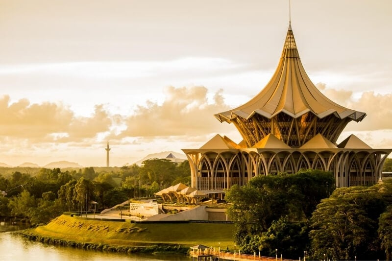
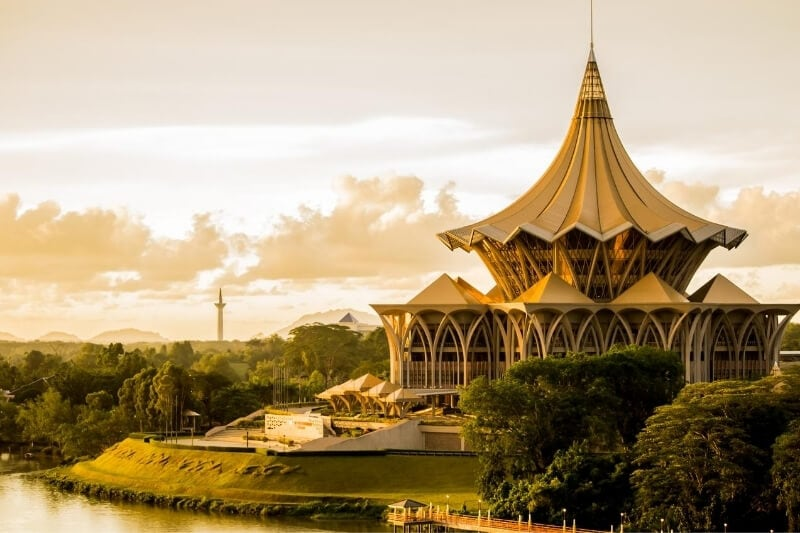

Personal Details
University Name: ALFA University College (AUC)
Lecture Name: Mr. Zainuddin Bin Johori
Subject Name/Code: Integrative Programming & Technologies (BIT4214)
Assignment: 2
Student Name: Abu Sazid Chowdhury Tomal
Student ID: ALFA2022-0043
Student Email: Asctomal13@gmail.com
Student Mobile No: +601136695237
Student Address: 27/1A Taragon Puteri Bintang, Bukit Bintang
Hobbies
1. Exploring Nature: I find peace and inspiration in exploring forests, mountains, and coastlines, appreciating the beauty of natural landscapes and wildlife.
2. Photography: Capturing moments and scenes through photography allows me to express creativity and preserve memories in a visual form.
3. Cooking: Experimenting with ingredients and flavors in the kitchen is a passion of mine. Cooking not only satisfies my palate but also allows me to unwind and be creative.
4. Learning Languages: Mastering different languages opens doors to new cultures and perspectives. It's a challenging yet rewarding hobby that expands my understanding of the world.
Education Details
Semester: 6
- Integrative Programming & Technologies (BIT4214) By Mr. Zainuddin
- Visual Basic.NET Programming (BIT4204) By Mr. Samson Idemudia
- Fundamental of Networking (BIT4193) By Mr. Samson Idemudia
- Advanced Academic Reading & Writing (ENG4013) By Ms. Maheswari
 
